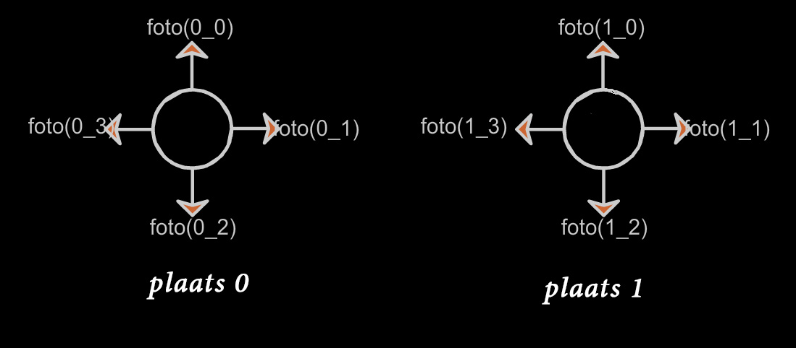

Tour v1.1
(Voorheen schooltour)Doel:
(her) activeren van je hersencel(len)
Inleveren:
Elke sprint, behalve de 0 sprint, lever je een link naar je werkende product! Uiteindelijke oplevering: tour (van de school? / 3d wereld? / je kamer?)
Opdracht omschrijving
- Agile
- Sprint af? Link naar werkende versie in Magister
- Per sprint TIPS in PDF
- Vrijheid Qua techniek, maar let op de dikgedrukte omschrijving in de PDF.
- Eerst alleen, later samen.
Voorbeelden van wat we gaan maken
Of bedenk zelf iets!
Sprint 0
Maak een plannetje..
- Wat moet de gebruiker kunnen?
- Welk materiaal heb je nodig?
- Welke onderdelen kunnen worden gemaakt/onderzocht?
- Weet je het niet zeker? Stem af, vraag.
- Maak 4 proef-foto's van 2 plekken (dus 8 foto's totaal)
Sprint 1
Maak een webpagina en laat een foto zien, zo groot mogelijk.
Sprint 2

Maak een functie, om een willekeurige plek en richting te kunnen laten zien.
function showTour(plek, richting)
{
....
}
showTour(1,1);
Sprint 3
Zorg dat je kunt rondkijken, sla de foto's op in een object literal of Array
Denk na over een logische naamgeving van je images .
var place= ["place0/foto0.jpg",
"place0/foto1.jpg",
"place0/foto2.jpg",
"place0/foto3.jpg"]
;Sprint 4
Sluit twee nodes op elkaar aan. Zodat je kan wisselen met een klik.
Sprint 5
Maak een object connecties en voeg de connecties tussen de twee nodes toe in code.
var connections=[
{
from:{node: 0, dir: 1},
to:{node: 0, dir: 1}
},
{
from:{node: 1, dir: 3},
to:{node: 0, dir: 3}
}
];Sprint 6
Voeg een interface toe waarmee, je links, rechts, vooruit en achteruit kan.
Klik nu heen en weer door de twee nodes/plekken, de kijkrichting moet hetzelfde blijven bij veranderen van plek..GROEPJES VORMEN
Maximaal 4 per groepje,
overleg over elkaars ideeen,
maak samen 1 plan.
Sprint 7

Schets een plattegrond van de tour van jouw groepje
Verdeel de taken:
foto, connecties, inventaris, map, interface..
Sprint 8

Deze situatie moet je afvangen in de interface..
Tenslotte
Maak het mooi
Test en verbeter
Inleveren via Github..
Make me proud..